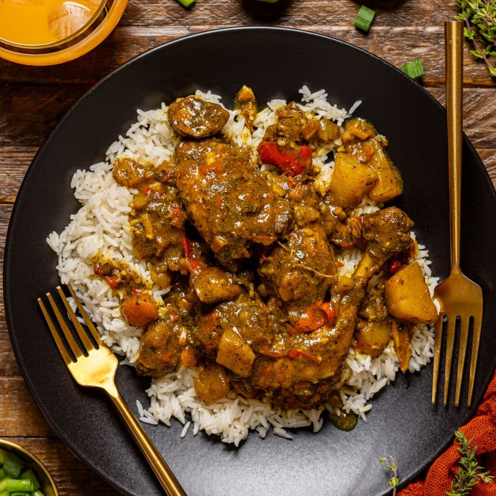

Jamaican Chicken Curry

Description
The Jamaican chicken curry is a bold flavourful dish that's cooked over ow heat, which allows for all the spices to develop and get to know each other!
It contains some veggies, chicken, potatoes, and some scotch bonnet peppers for that heat! You can always sub that out if you're not about that pepper life 😄
Ingredients
- Chicken
- Red Bell Peppers
- Jalapeno Peppers
- Garlic & Ginger
- Spices
- Potatoes
- Coconut Milk
- Worcestershire Sauce
- White Wine Vinegar
- Cilantro
- Cayene & Hot Sauce
Instructions
-
Salt your chicken and then saute the onions.
-
Add bell pepper, Jalapeno, Garlic, and Ginger [Chop them all up, of course.....]
-
Stir in your spices
-
Add your chicken and cook 'em till they're golden
-
Add te remaining Ingredients, stirring before bringing to a simmer. SImmer for about 15 - 20 minutes
-
Serve 'er up with some cilantro and white rice!